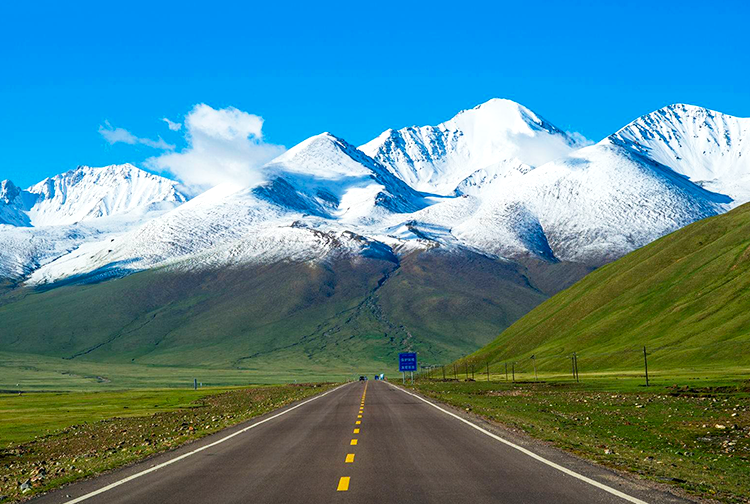
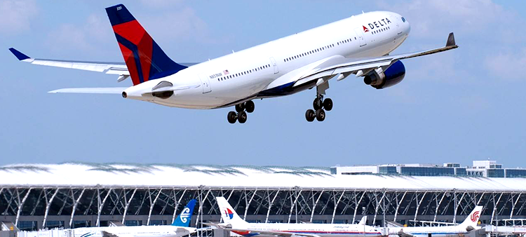
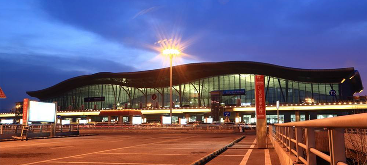
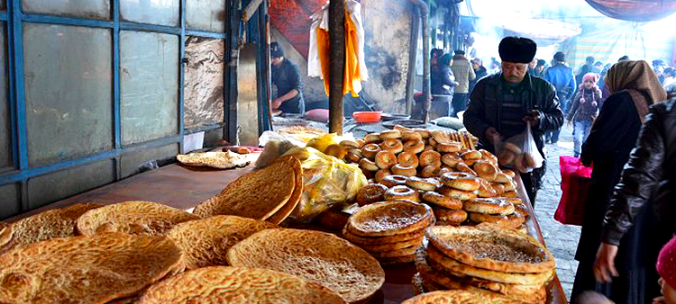

跨越天山，穿越冰雪与火焰，独库公路9天狂野自驾之旅
有一种地方，叫风景在路上
有一种旅行，叫公路旅行
独库公路是中国最险峻最壮美的英雄之路
任何去这条路的人都不会后悔
行程路线
-
上海
出发
-
独库公路
独库公路大片第一站 乌鲁木齐至库车
-
库车至巴音布鲁克
去库车神秘大峡谷，大小龙池，翻过铁力买提达坂，进入巴音布鲁克大草原
-
巴音布鲁克至那拉提
今天是三天以来形成最为轻松的一天
-
上海
关于这次旅行
畅享自驾 独库公路
新疆独库公路环线自驾游
独库公路有三分之一是悬崖绝壁，五分之一的地段处于高山永冻层，跨越了天山近十条主要河流，翻越终年积雪的四个冰达坂，沿途风景只能用神奇来形容。

上海——独库公路
行程介绍独库公路独山子至乔尔玛路段因暴雨又又又泥石流了～，不是我口吃，实在是我每次要走独库就被告知泥石流了......不行，我必须得走！索性将形成倒过来，从库车进入这条被誉为中国最美公路之一的———独库公路。
D1 日程安排
-

1上海浦东国际机场位于上海浦东长江入海口南岸的滨海地带,距上海市中心约30公里,距虹桥机场约40公里。浦东航站楼由主楼和候机长廊两大部分组成,均为三层结构,面积达28万平米,到港行李输送带13条,登机桥28座；候机楼内的商业餐饮设施和其他出租服务设施面积达6万平米。
交通详情G1653
-

2乌鲁木齐机场 地窝堡国际机场，是国家民用一级机场，位于新疆维吾尔自治区首府乌鲁木齐市郊西北地窝堡，距市区16.8公里。乌鲁木齐机场原为中苏民用航空机场，1970年7月经国务院批准进行扩大规模扩建。1973年建成和对外开放，是中国五大门户机场之一。
127.3公里
1.6小时
-

3独库公路 由于地域特殊，每年11月初到次年5月实行冬季交通管制，且禁制9座以上车辆进入。公路通车时间为5月-10月，最佳旅游时间为盛夏七八月份。夏季这条路段异常优美。最佳旅游时间为盛夏七八月份。夏季这条路段异常优美。最佳旅游时间为盛夏七八月份。
127.3公里
1.6小时
-
- 
-
4美食 比起库车大巴扎，我更喜欢大巴扎对面接地气的市场 ，这里有新鲜的水果，可口的酸奶，热乎乎的馕。这个市场基本上都是维族同胞，很多都不会说汉语，但是价格很便宜~水果也很新鲜。是体验当地人生活的一个地方，感受他们的习惯，亲切近人
127.3公里
1.6小时
-
5库车饭店 （五星楼）座落于天山中路266号。建筑雄伟、错落有致、绿林环抱、鲜花争艳，成为县标志性建筑，是以旅游住宿、风味餐饮、商务办公、承接国际、国内会议为主要服务项目的涉外饭店。库车饭店（五星楼）入住、餐饮、商务、娱乐可尽享时代风尚。
 旅途愉快
旅途愉快